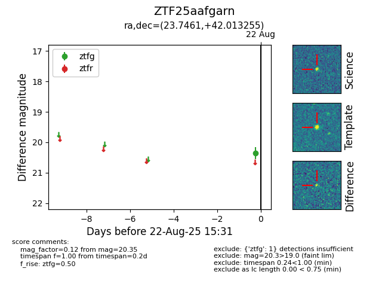

Target ZTF25aafgarn at 2025-08-22 15:31, see:
FINK: fink-portal.org/ZTF25aafgarn
Lasair: lasair-ztf.lsst.ac.uk/objects/ZTF25aafgarn
ALeRCE: alerce.online/object/ZTF25aafgarn
alt names
ZTF25aafgarn (ztf,alerce)
coordinates:
equatorial (ra, dec) = (23.7461,+42.01325)
galactic (l, b) = (131.5273,-20.13056)
photometry
last ztfg=20.35
1 ztfg detections
